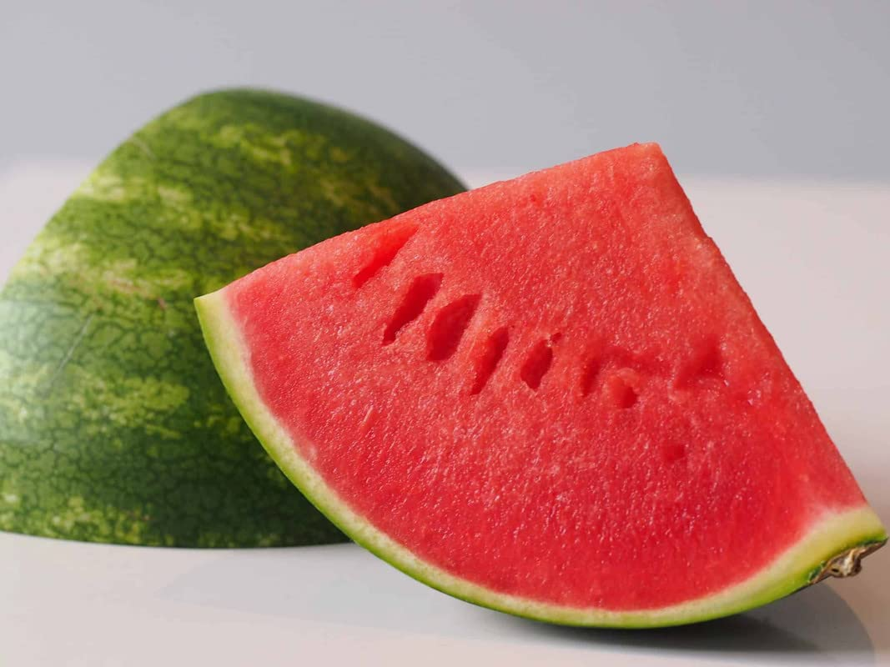
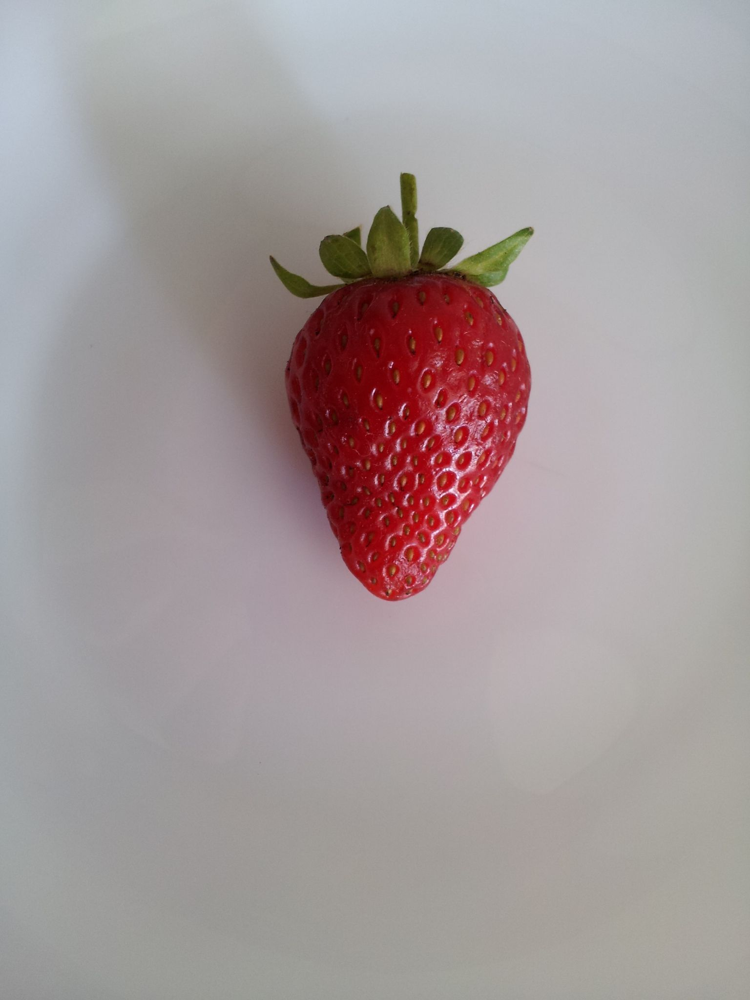
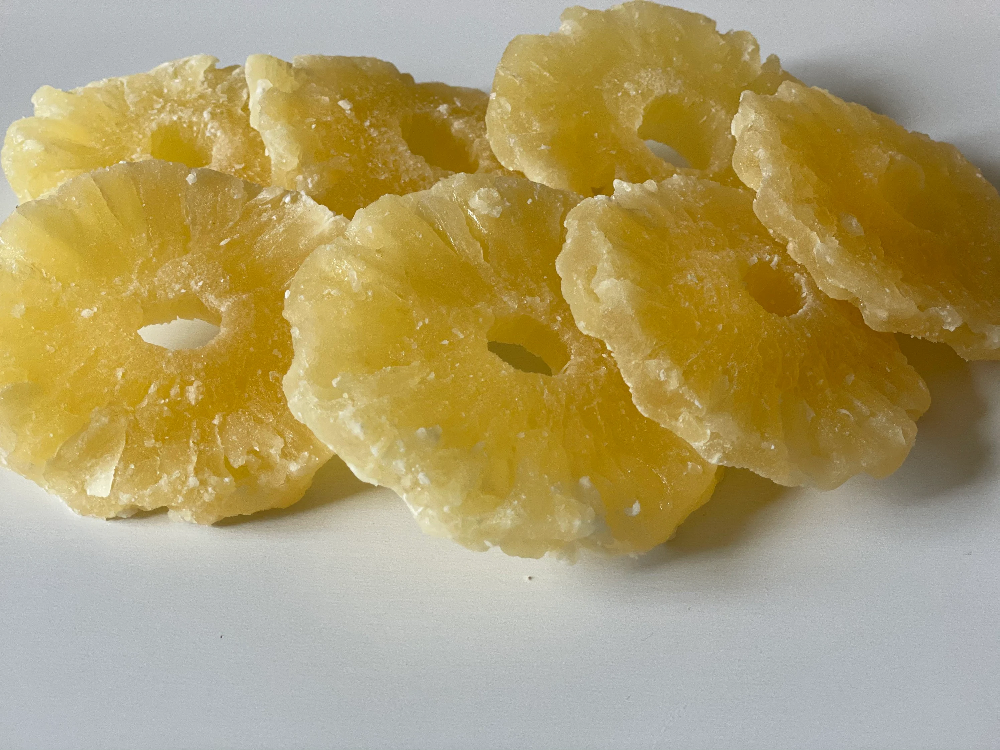
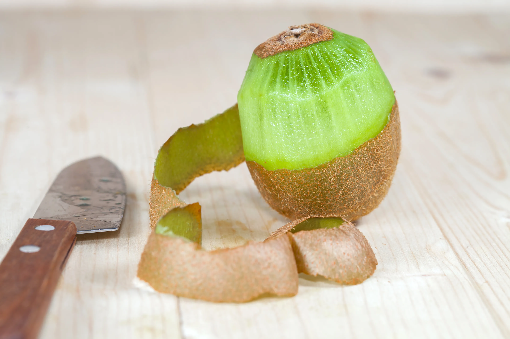
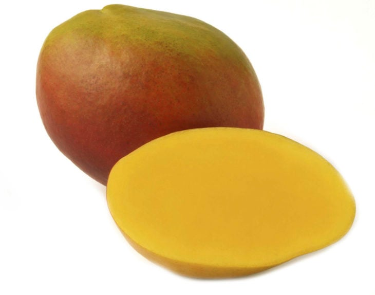

Fruita fresca
Ingredients
- una troç de sindria pelat

- 1 maduixa

- un troç de piña pelada

- mig kiwi

- un troç mango sensa pell

- (la cantitat de fruita que volgueu ficar es opcional)
Pas a pas
- Netejem les 4 peçes de fruita.

- Tot seguit,les tallem amb la forma que li volguem donar.

- La ordenem al plat segons el nostre gust y les marquem amb la forquilla fent una mica de presio per a que quedin com el meu emplatatje.
- Fiquem la fresa sobre del mango.
- Per acabar si volem que el plat quedi com el plat final, tindriem que tllar la fruita molt fineta, encara que tambe es pot emplatar al gust.
Resultat final

Volver a incio